Tips for Creating and Exporting Better SVGs for the Web
Published
|
Estimated Reading Time:
Working with SVG in a RWD workflow usually involves a design phase and a development phase. The design phase is usually handled by designers who may or may not know how to code. And because of the nature of SVG as both an image format and a document format, every step taken in the graphics editor in the process of creating the SVG directly affects the resulting code and hence the work of the developer in charge of embedding, scripting or animating the SVG. In my day-to-day work, I am usually the developer whom designers hand the design assets over to, and SVG images are part of those assets.
Most of the assets I’ve been handed in my past projects needed a do-over and/or a second round of editing in the graphics editor before I could script them, because the resulting SVG code was not optimized enough for the kind of work—especially animation—that I was hired to do. The reason for that is that many of the designers I’ve worked with knew very little—if anything—about SVG code. They create vector graphics and UI assets all the time, but, for them, SVG is no more than an image format and they don’t know much about the code generated when their assets are exported as SVG documents.
There are some steps that designers can take or avoid—a set of “dos and don’ts”—that can help make the generated code cleaner. In this article, I want to share some of these. If you know any more, please do share them in the comments at the end of the article.
The tips we’re going to go over are applicable in Adobe Illustrator (Ai)—my graphics editor of choice—as well as other graphics editors. But since I personally use Ai, it is what I will be focusing on throughout this article.
We’re also going to go over the current SVG export options available in Ai and which ones to choose and why. But note that these options will change in the future, and this article will then be updated to reflect those changes.
That this article is based on my talk “SVG For Web Designers (and Developers)”—a talk I gave at CSSDevConf 2015 last month.
So, let’s start.
If you’re using Sketch to create SVGs, there are some things you can do to export cleaner code as well. Sean Kesterson has shared some tips in this article.
1. Create Simple Shapes Using Simple Shape Elements, Not <path>s.
There is a reason we have different basic shapes in SVG for creating, well, basic shapes. One could create practically any shape using a <path> element, right?
Simple shape elements (<line>, <circle>, <rect>, <ellipse>, <polygon> and <polyline>) are there for many reasons, and one of these reasons is that they are more readable and more maintainable and editable by hand than their <path> alternatives.
Basic shapes come with a set of attributes that allow you to control the shape features, such as position (x, y, cx, cy) and dimensions (width & height), while paths don’t come with these attributes.
For example, the following snippet shows the difference between a circle created and exported as a simple shape, versus one created and exported as a path:
If you want to animate your shape by, say, moving the position of the circle or making it bigger, you can do that by animating the position of the center via the x and y coordinates (cx & cy) and the radius of the circle (r). Whereas if you are working with a circle generated as a path, you will have to resort to CSS/SVG transformations (translation and scaling) to do that. And then suppose you want to animate that path and the animation requires you to apply further transformations to it? It can easily become a transformation mess.
Another advantage to using simple shapes is that, in the majority of cases, the code required to create a shape using simple shape elements is less than that required to create the same shape using a <path> element (see above snippet for a comparison), so using simple shapes will also result in a smaller file size, which is always better.
2. Convert Text to Outlines.. Or Don’t.
To convert text to outlines:
Select the text you want to convert.
Choose Type → Create Outlines
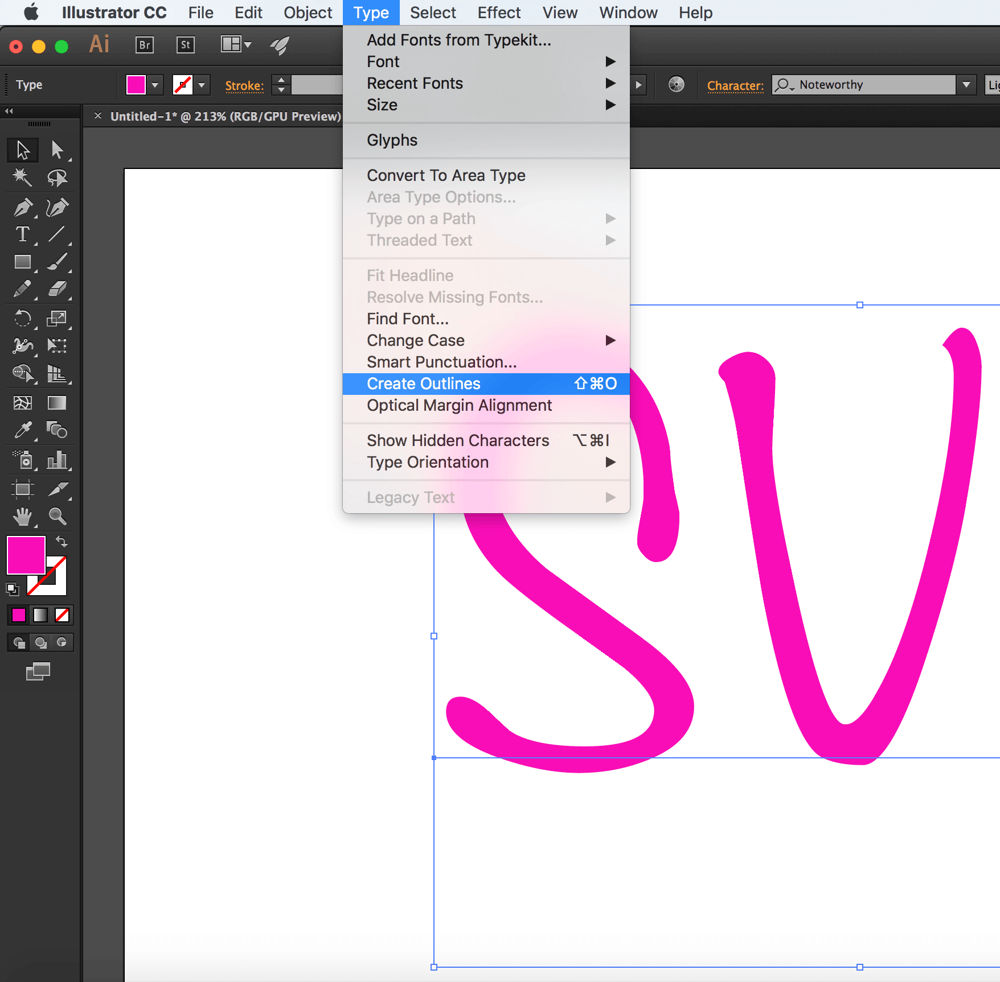
Pros:
Text converted to outlines will preserve the font face used, without having to use a web font to display it. This means you save a few extra HTTP requests and don’t risk displaying your text with a fallback font that generally doesn't look good enough to substitute the beautiful font of your choice.
Outlining the text and preserving the font face used is good for preserving a brand’s identity when the latter is defined by the font face used, for example: in a logo. I almost always turn logo text to outlines. Outlining is also good for preserving the font face of certain scripts when used for headlines.
Cons:
Text converted to outlines is not real text: it is a set of paths that form the outline (shape) of the text. Consequently, the text becomes unreal and inaccessible, not searchable and not selectable.
In the case of a script headline or even a logo where the text is outlined, using an alt text (if the logo is embedded as an image) or SVG’s accessibility elements (<title> & &>) is a good idea for providing alternative text for screen readers.
I highly recommend reading all about making SVGs accessible in these two articles by Léonie Watson:
Converting text to outlines can significantly increase your SVG file size, depending on the complexity of the font face used. The image below shows the difference in the size (and readability) of an SVG with text converted to outlines (left) and text exported as SVG <text> (right).
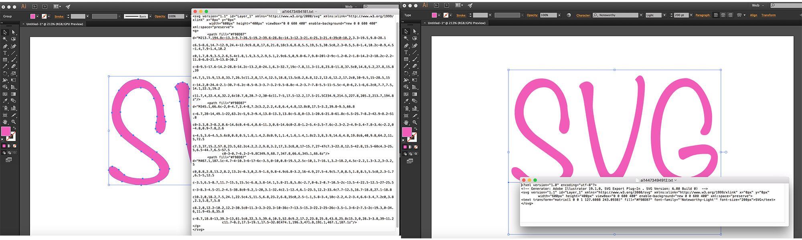
Paths are not easily controlled and animated as <text> elements (including <tspan>s) are. The latter have a set of attributes that give you more control over your animations, while path data is limited in that sense.
3. Simplify Paths.
A path is defined by a set of points which in turn are defined by a couple of coordinates each.
The less the number of points, the less the path data (d attribute), and, consequently, the less the overall SVG file size. This is always a good step to take because a smaller file size is better for performance.
To simplify a path:
Select the path
Go to Object → Path → Simplify
Tweak the number of points. Make sure you have the Preview checked so can see how the path changes as you change the number of points. Tweak the number to get to the minimum number of points while preserving (or sacrificing) as much of the path’s visual appearance as you need.
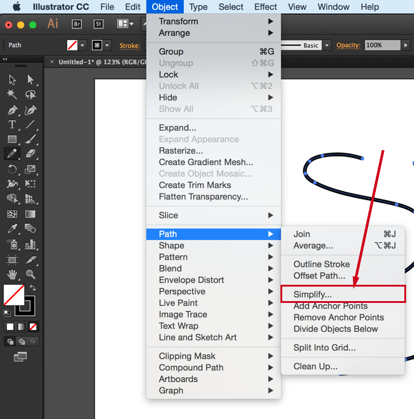
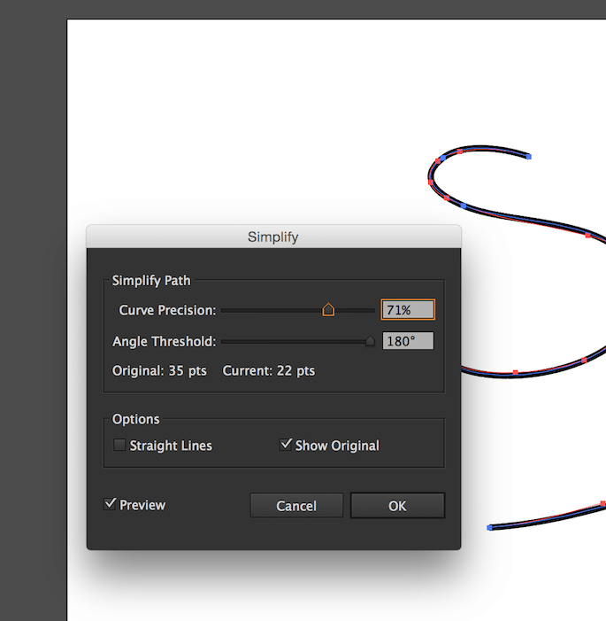
There is a video tutorial created by Adobe to explain the process; so if you are more into videos, you can check it out here.
You can also simplify paths using the Warp Tool. I’m not a designer and I usually use Ai’s Simplify algorithm to simplify my paths, so, if you’re a seasoned designer, you probably already know much more about the Warp tool than I do. There is an article over at Smashing Magazine all about this tool, in case you want to check it out.
4. Avoid Merging Paths Unless You Don’t Need Control Over Individual Paths.
Many designers tend to combine or merge paths whenever possible. To merge paths:
Select the paths you want to merge.
Go to Window → Pathfinder
Click the Merge option among the list of options at the bottom of the panel (third icon from the left, shown in the screenshot below).
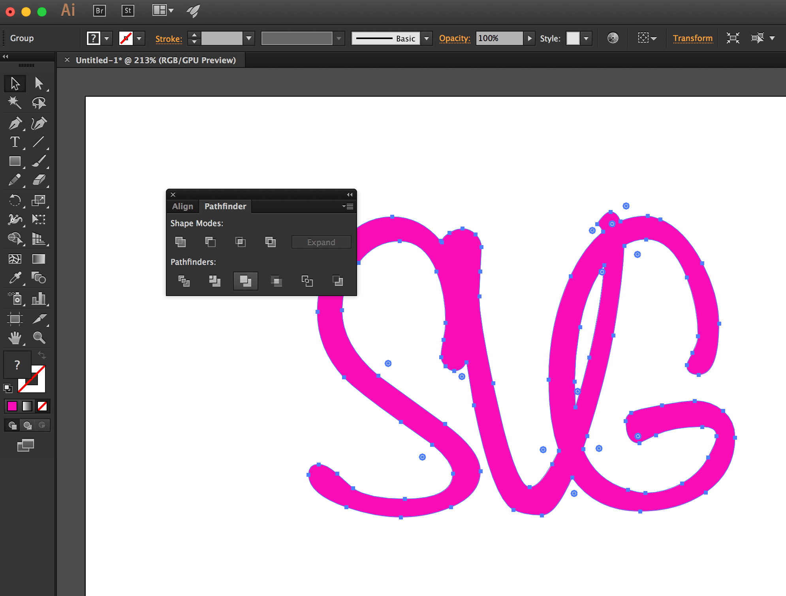
Combining paths may have its benefits, but avoid it when you or the developer needs to control and/or animate paths separately. Some animations are designed so that multiple elements are animated seperately, or sometimes you just want to style the paths using different fill colors. If you combine the paths, that will no longer be possible.
You need to make sure you know what the developer (or yourself, if you’ll be handling the development phase as well) needs and wants to do with the shapes you’re working on, and make the decision to merge or not to merge accordingly. This will save both of you a lot of time and friction.
5. Create Filters Using SVG Filters, Not Photoshop Effects.
If you use the filters in the Photoshop Effects section under the Effect option, Illustrator is going to export the effects you create as raster images. For example, if you create a drop shadow using the Blur Photoshop effect, the drop shadow generated will be a raster image embedded inside the SVG either inline or externally, using <image>. You definitely don’t want that when you work with SVG.
To generate your effects as SVG code, you need to use the SVG Filters available:
Go to Effect → SVG Filters
Choose and use one of the filters available in that panel.
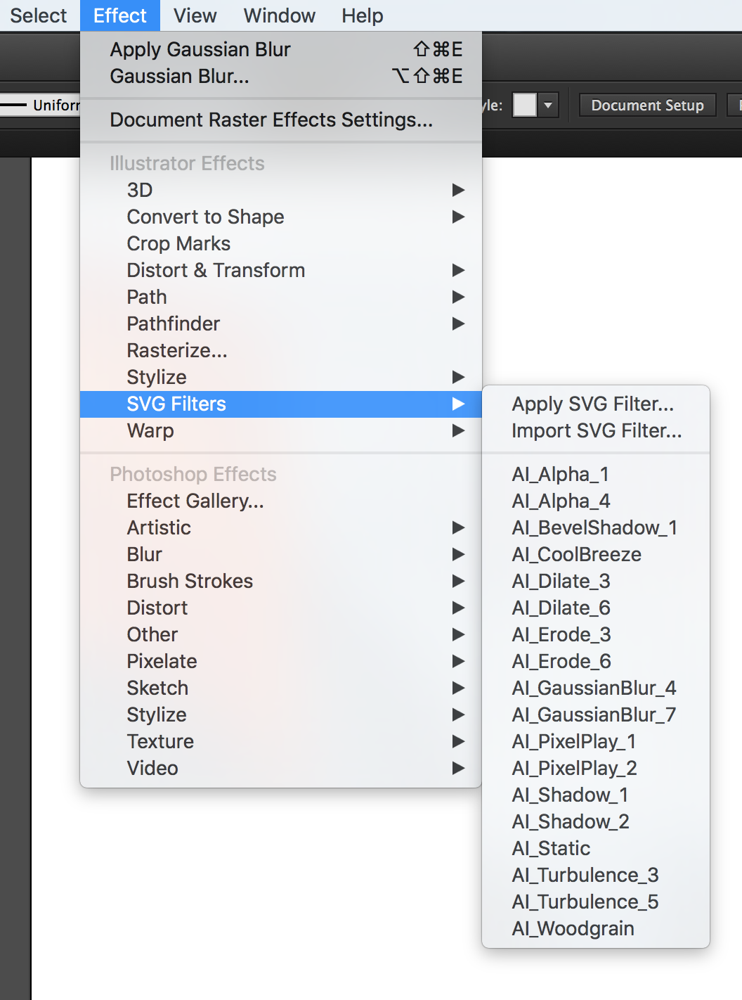
6. Fit Artboard to Drawing.
Have you ever embedded an SVG on a page, gave it a specific height and width and then found that it was being displayed at a size smaller than what you specified?
In most cases, this is caused by an amount of white space insidethe SVG viewport. The viewport is displayed at the size you are specifying in your style sheet, but the extra space inside of it—around the graphic—causes your image to “shrink”, because that white space is taking an amount of, well, space, inside the viewport.
To avoid this, you need to make sure your artboard is just big enough to fit the drawing inside of it, but not any bigger.
The artboard dimensions are the dimensions of the exported SVG viewport, and any white space in the artboard will be generated as white space inside the viewport.
To fit your artboard to your drawing:
Select the entire graphic. (I use cmd/ctrl + A.)
Go to Object → Artboards and choose the Fit to Artwork Bounds option.
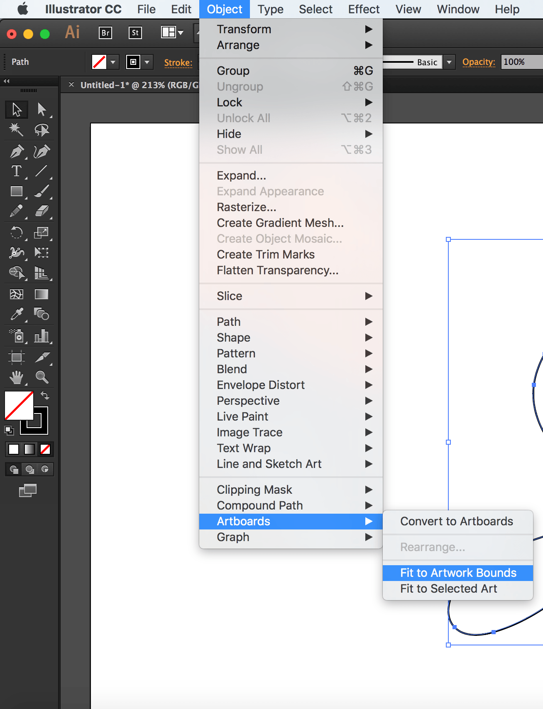
7. Use Good Naming, Grouping and Layering Conventions.
I know this sounds like a no-brainer, but it needs to be emphasized for a few reasons:
The IDs and class names you use in the graphics editor are going to be translated to IDs and class names in the generated code. The more these names make sense and the clearer they label their respective elements, the less friction there will be when the developer works with the code.
Now, I'm not saying you have to think up the perfect names—I'm sure we all have different ways of naming things and naming can be one of the hardest tasks, but labelling groups appropriately goes a long way. For example, if you are drawing a car, then using an ID of wheel to name the layer or group wrapping the shapes making up the wheel would be appropriate. If you are grouping all wheels in one group, you might give it an ID wheels. Simple names to tell elements and groups apart go a long way and save a lot of time, especially if the developer will be editing and manipulating the code by hand.
Illustrator does not do the best job at naming things, so specifying names helps reduce the amount of junk it produces. Granted, there will be some extra editing required to get rid of the annoying underscores that Ai insists on generating, but using proper names helps make this process a bit easier.
As mentioned before, the next verison of Illustrator will show a big improvement in the way SVGs are generated, including generated IDs.
Use layers to group related elements. Layers are translated into groups in code, so name these well too. Create layers/groups to wrap related elements together, especially those that might be animated as a whole. A lot of time could be spent reordering and grouping elements by hand by the developer if this is not already done in the design phase. To save time, make sure you group appropriately. Talking to the developer in the design phase and designing how the animation will be executed together is a big time saver.
If the images you're creating are going to be used to create an SVG sprite, the names you use can and will be used by most automation tools to generate new files. So using clear and proper names will result in cleaner file names.
8. Choose The Best Suitable Export Options for the Web.
Starting with Illustrator CC 2015.2 released in November 2015, a new SVG Export workflow (File > Export > SVG) is available to export web-optimized SVG files for your web and screen design workflows. You can also choose to export individual objects versus the entire artboard. Refer to this article for details.
At the time of writing of this article, Illustrator comes with a bunch of export options that allow you to generate a generally better SVG code.
To export your SVG:
Choose File → Save As
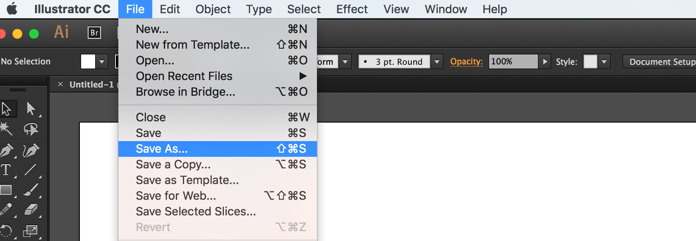
Choose SVG from the dropdown menu
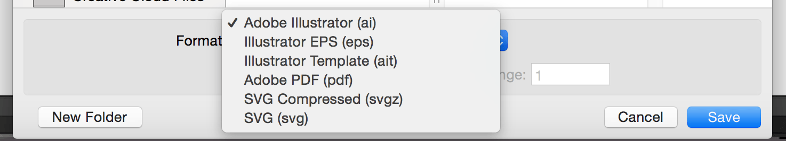
Click Save.
Once you click save, a dialog will show up that contains a set of options that you can customize, and that will affect the generated SVG code:
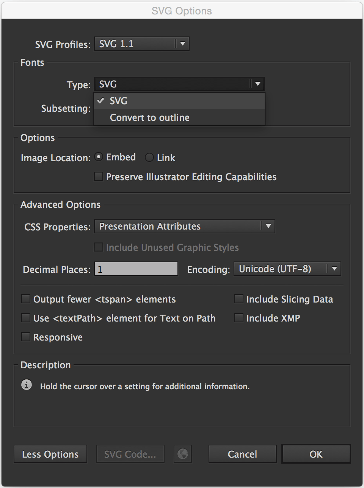
The options shown in the image above are the ones recommended for generating SVG for the web.
Of course, you can choose to Outline text if you don’t want to use a web font; Illustrator provides you with an option to do it upon export, as you can see, as well.
The Image Location option specifies whether any raster images will be embedded inline in your SVG or will be external with a link inside the SVG. This, again, depends on what you need. Inlining images inside the SVG can increase its file size dramatically. Last time a designer sent me an SVG with an image inlined in it, the file size was more than 1MB! After removing that image (which was caused by the Photoshop Effects used, that we mentioned earlier), the file size dropped to less than 100KB! So, choose wisely.
The CSS Properties option gives you the option to choose how you want the styles inside the SVG to be created: using presentation attributes, inline styles, or in a <style> tag. This is also a matter of preference and depends on how you intend to manipulate the SVG once you’ve embedded it. If you’re not the one who’s going to do that, make sure you consult with the developer to choose the option that suits their needs best.
The less the number of Decimal Places, the less the file size of the SVG. One decimal place should generally be enough, so I’d go with that.
Note that if you choose 3 or 4 decimal places, for example, and then use an optimization tool to optimize the SVG and bring that number down back to 1, the SVG might end up visually broken; so it is best to choose this option early on.
There is more to the options panel than what I have covered. Adobe’s Michaël Chaize has written an excellent article about the export panel that explains what each option does exactly. I highly recommend checking his article out:
Now, at the time of writing of this article, Illustrator will still generate unnecessary code such as editor metadata, empty groups, among others, so you will need to optimize the SVG further after you’ve exported it, be it by hand, or using a standalone SVG optimization tool.
But before we jump into the Optimization section, I want to note that you may or may not want to check an extra option as you save the SVG: the “Use Artboards” option, in the Save panel:
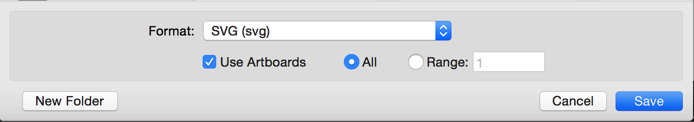
This option is useful for when you are working with multiple SVG images (for example: icons) and you are using an artboard for every icon.
Exporting multiple artboards will generate multiple .svg files, one for each artboard (one for each icon).
If you are working with only one artboard, this option will be disabled by default.
Choosing to export one or multiple SVG files depends on how the SVG is going to be embedded.
For example, if you are going to create an SVG sprite for an SVG icon system, there are several ways you can create and use the sprite, and each one would require a different approach: one technique requires the icons to be separate at first, and another requires them to be part of one image.
I will be writing a separate post about spriting SVGs and the artboard options, but until then, you can get an overview of the different spriting techniques in the following article I wrote for 24Ways.org:
It is usually recommended to optimize the SVG after exporting it from a graphics editor using a standalone optimization tool. The current most popular optimization tool is the NodeJS-based tool called SVGO. But it may not always be a good idea to optimize your SVG, especially if you intend to animate it.
If you intend to script and/or animate the SVG, you’re likely to set up a certain document structure—wrapper groups, ID names that you are not using/referencing inside the SVG but intend to use in your JavaScript, etc. This structure is going to change if you optimize your SVG using SVGO (or any other optimization tool).
Optimization tools usually remove any unused groupd and IDs, as well as apply many changes to the SVG to make sure it is optimized well.
I’ve once optimized an SVG after applying an animation to it using <animate>. The SVG was broken and so was the animation inside of it, because the entire structure was changed. So that is something to keep in mind before optimizing SVGs.
If you’ve manually edited and/or generated an SVG with a certain structure that you need, avoid optimizing using an optimization tool, and optimize by hand as much as possible. Some editor junk at the beginning and end of the SVG can be easily removed by hand. Other junk, such as metadata and classes generated by editors like Sketch—which has no SVG optmization options, can be harder to optimize by hand.
I generally never use Sketch to generate complex SVGs. I use Illustrator or Inkscape; the latter comes with a default export panel which gives you a lot of options to optimize your SVG before exporting it (see image below). Inkscape generates the cleanest SVG code at the time of writing of this article—that is, if you choose the Optimized SVG option, but the blurriness of the UI on a retina screen as well as its dependency on X11 on OS X make it a pain to use, so I am currently sticking with Illustrator.
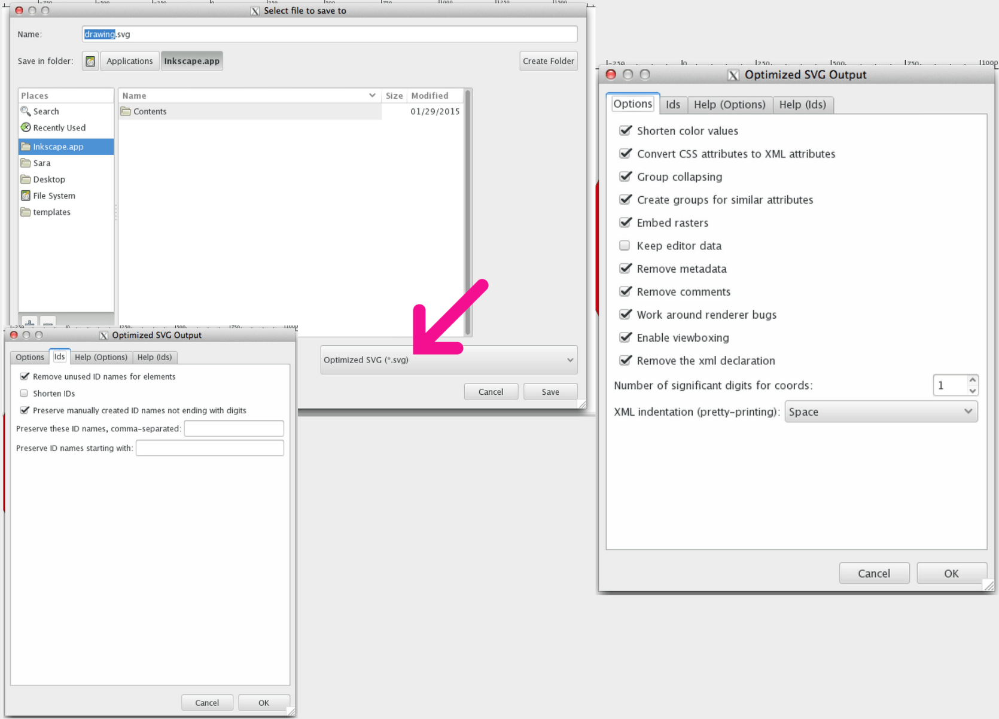
If you do need/want to optimize your SVG, SVGO is the tool I would recommend.
SVGO comes with a bunch of plugins that you can fit into practically any kind of workflow. You can find more information about those tools in the following article I wrote a few months ago:
Possibly the most important tip I can give is to communicate, and to do it early in the design process.
I’m now assuming that you—the designer creating the SVG—are not the same person responsible for developing the SVG (scripting, animating, embedding, etc.).
Almost every one of the above tips requires knowledge of the development phase and what the developer intends to do with the SVG—how they intend to embed, script, style and animate it. So, unless you’re the same person making decisions for both phases, and unless you want to waste a lot of time reiterating and editing the SVGs, you need to make sure you know what the developer needs to do with the SVG and what approach(es) they will be taking. If you’re working on a project that has a tight deadline, you probably can’t afford to waste a big amount of time making changes and revisions to image assets, when you can avoid that by communicating early.
Designers and developers can be each other’s best friends. The very nature of SVG requires both design and development phases to be open to one another, and this, in turn, requires the designer(s) and developer(s) to talk, before the design process begins, and throughout the process as well.
I hope this article helps save you some time in the future. I’m not a designer so I might have missed a few clever design tips. If you know any that would help generate better SVGs, please feel free to share them in the comments below.